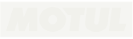

AJANS
Sora, gökyüzü demek. Tavanı olmayan tek yer. Fikirlere de öyle bakıyoruz.
Sosyal medya yönetimini, içerik üretimini, tasarımı, video prodüksiyonunu ve kampanyaları tek ekipte topluyoruz. Fikri yazanlar çekimde de sahada da işin başında duruyor. Böylece fikir bir elden ötekine geçerken sulanmıyor, iş de hızlı çıkıyor.
İstanbul'dayız. Ekibimiz strateji, tasarım, prodüksiyon ve dijital iletişim disiplinlerinden geliyor.
HİZMETLER
STRATEJİ & İÇERİK
Sosyal medya stratejisi ve yönetimi · Marka iletişimi ve kreatif danışmanlık · Metin ve içerik üretimi
TASARIM
Grafik tasarım ve görsel kimlik · Web sitesi tasarımı ve geliştirme
PRODÜKSİYON
Fotoğraf ve video prodüksiyonu · Reels, reklam filmi ve kurgu
KAMPANYA & SAHA
Yaratıcı kampanya fikirleri · Dijital reklam kampanyaları · Etkinlik, lansman ve saha iletişimi
Spor kulüpleri bizim sahamız.
Maç günü, transfer, sponsor. Bir kulübün iletişimi sezon boyunca hiç durmaz; bu tempoyu ve taraftarla konuşmanın dilini biliyoruz. Sarıyer Spor Kulübü'nün paylaşımlarını ve videolarını biz hazırladık.








Sarıyer Spor KulübüPetihtiyaçSpicelithHemmen ProfessionalArnilloSecunnix
FİKRİNİ GETİR.
Kısaca anlat, sana dönelim.
Formla uğraşmak istemezsen doğrudan yaz ya da ara.